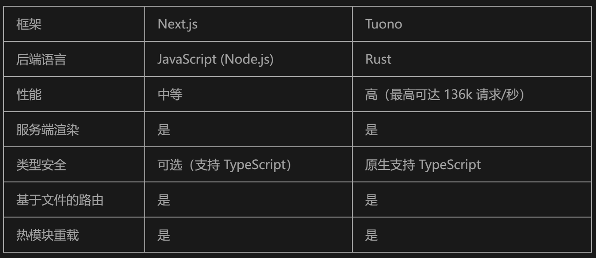

Tuono：基于 Rust 的 Next.js 全栈开发框架
在现代 Web 开发领域，开发者们总是追求更高的性能、更强的安全性以及更高效的开发体验。Tuono 是一个新兴的全栈开发框架，它结合了 React 的灵活性和 Rust 的高性能，为开发者提供了一种全新的选择。本文将深入介绍 Tuono 的核心特性、优势以及如何快速上手。
什么是 Tuono？
Tuono 是一个全栈 Web 开发框架，旨在将 React 用于前端开发，同时借助 Rust 的强大性能处理后端逻辑。Rust 以其高效、安全的特点而闻名，Tuono 则将这些优势带入了 Web 开发领域。框架名称“Tuono”在意大利语中意为“雷霆”，象征其速度与力量。
Tuono 的设计目标是为开发者提供一种既易于使用又高性能的开发工具，特别适合那些熟悉 Next.js 的开发者，帮助他们更轻松地过渡到 Rust 驱动的后端开发。
为什么选择 Rust？
Rust 是近年来备受关注的编程语言，其主要优势包括：
1. 性能：Rust 编译为机器码，性能远超 JavaScript 等解释型语言。 2. 安全性：Rust 的所有权模型和严格的编译器检查，可以有效防止常见的编程错误，如空指针或数据竞争。 3. 并发性：Rust 提供了无垃圾回收机制的高效并发支持，非常适合需要高吞吐量和低延迟的应用场景，如实时数据处理或游戏后端。
通过将 Rust 应用于 Web 开发，Tuono 带来了更高的性能和可靠性，为开发者提供了一个强大的后端基础。
快速上手 Tuono
安装
在使用 Tuono 之前，确保系统已安装 Rust。然后通过以下命令安装 Tuono：
cargo install tuono
创建项目
安装完成后，可以通过以下命令创建一个新项目：
tuono new my-project
cd my-project
npm install
这将生成一个基础的项目结构，开发者可以直接开始构建自己的应用。
Tuono 的核心特性
1. TypeScript 类型安全
Tuono 支持使用 TypeScript 编写前端代码，这为开发者提供了强大的类型检查能力，能够在开发阶段捕获潜在错误。TypeScript 不仅提升了代码质量，还通过代码补全和重构工具提高了开发效率。
2. 基于文件的路由
类似于 Next.js，Tuono 提供了基于文件的路由系统。开发者只需在 pages 目录中创建文件，即可自动生成对应的路由。例如：
my-project/
├── src/
│ ├── pages/
│ │ ├── index.tsx // 首页
│ │ └── about.tsx // 关于页面
│ └── main.rs // 后端逻辑
案例代码
// src/pages/about.tsx
import React from "react";
const About: React.FC = () => {
return (
<div>
<h1>About Us</h1>
<p>This is an example about page built with Tuono!</p>
</div>
);
};
export default About;
这种路由机制减少了配置代码，使得开发者可以专注于功能实现。
3. 服务端渲染 (SSR)
Tuono 的服务端渲染功能基于 Rust 实现，能够在服务器端生成 HTML 内容后发送给客户端。这不仅提升了页面加载速度，还改善了搜索引擎优化（SEO），让内容更容易被索引。
// src/main.rs
use tuono::{AppBuilder, render};
fn main() {
let app = AppBuilder::new()
.route("/", |req| {
render("index", req)
})
.route("/about", |req| {
render("about", req)
})
.run();
}
4. 热模块替换 (HMR)
Tuono 的热模块替换功能允许开发者在不刷新页面的情况下实时查看代码更改效果。这对前端开发尤其重要，能够显著提升开发效率。
{
"scripts": {
"dev": "tuono dev"
}
}
5. 性能表现
根据初步测试，Tuono 的性能表现优越，能够处理每秒高达 136,000 次请求，相比之下，Next.js 的处理能力显得逊色。这种性能优势使 Tuono 成为构建高性能 Web 应用的理想选择。
Tuono 与 Next.js 的对比
虽然 Tuono 和 Next.js 都致力于简化全栈开发，但它们在后端实现上有显著差异：
- Next.js：基于 Node.js，生态系统成熟，适合大多数 JavaScript 开发者。
- Tuono：基于 Rust，性能更强，适合需要高吞吐量的应用。
对于熟悉 React 的开发者来说，Tuono 提供了许多熟悉的概念，同时将 Rust 的性能优势引入到全栈开发中。
使用 Tuono 的优势
- 性能卓越：Rust 的高效性能使 Tuono 能够处理更高的请求量。
- 安全性与可靠性：Rust 的强类型系统减少了运行时错误。
- 现代开发实践：支持 TypeScript 和热模块替换，提升开发体验。
- React 开发者友好：Tuono 的设计对熟悉 Next.js 的开发者非常友好。
挑战与考虑
尽管 Tuono 有诸多优势，但也存在一些挑战：
- 学习曲线：对于不熟悉 Rust 的开发者来说，学习成本较高。
- 生态系统成熟度：作为一个新框架，Tuono 的社区支持和第三方库尚不完善。
- 文档不足：与成熟框架相比，Tuono 的文档资源较少。
总结
Tuono 是一个具有潜力的全栈开发框架，它结合了 React 的易用性和 Rust 的高性能，为开发者提供了全新的选择。虽然目前仍处于早期阶段，但随着社区的发展和生态系统的完善，Tuono 有望成为现代 Web 开发的重要工具。
如果你正在寻找一种高性能、现代化的全栈开发解决方案，不妨试试 Tuono，探索它如何为你的开发工作流带来改变！